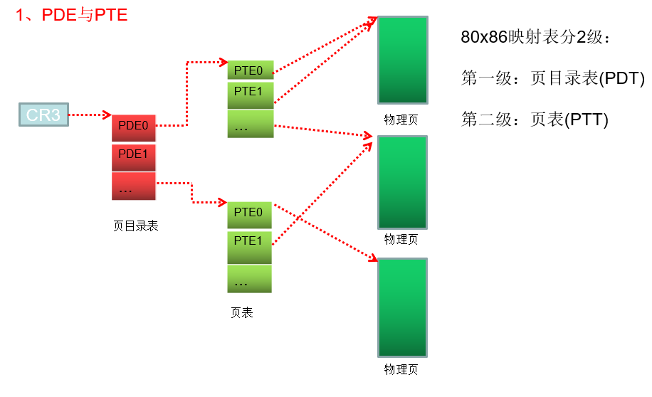
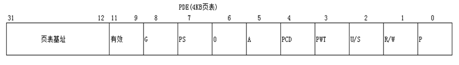
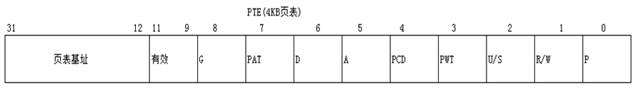
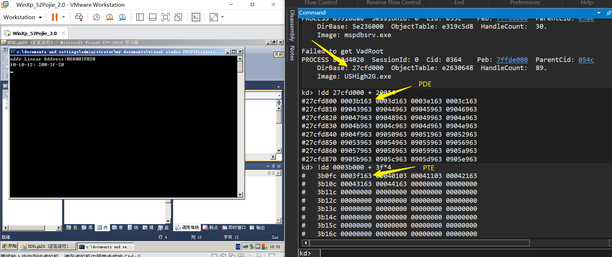
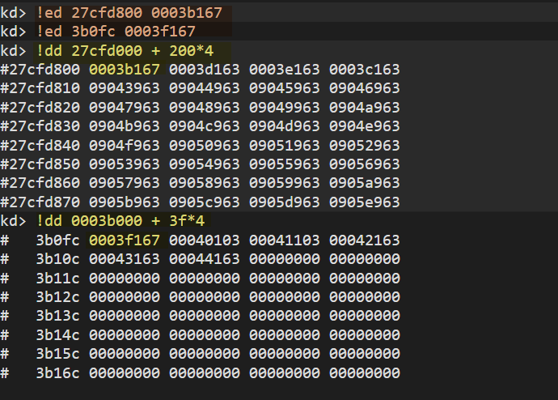
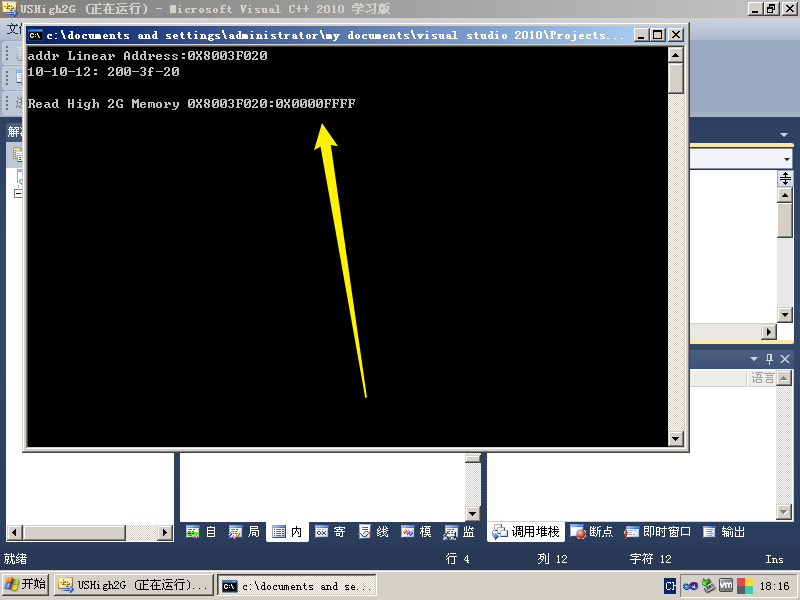
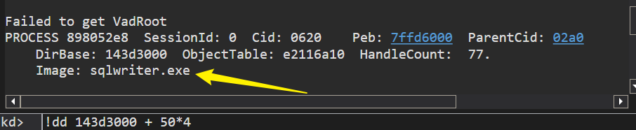
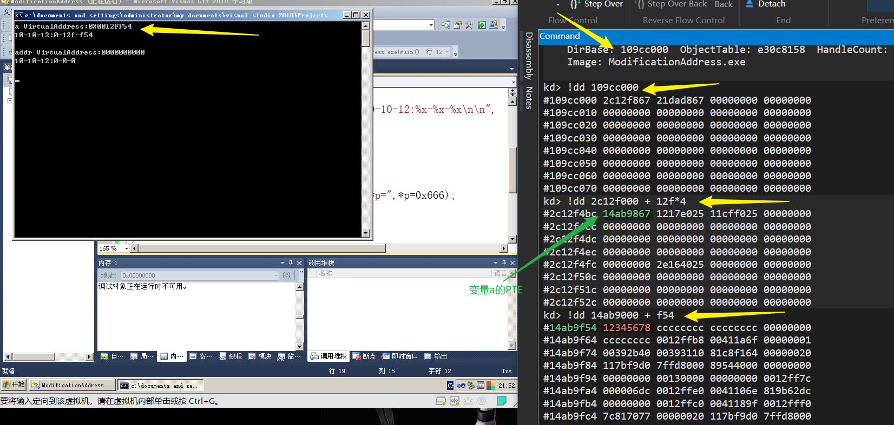
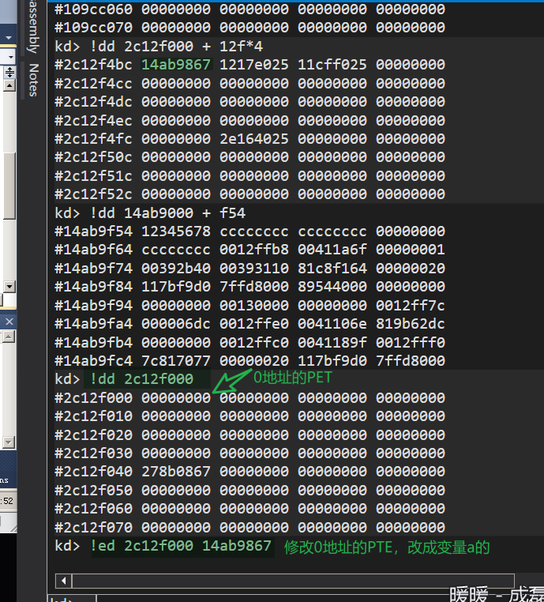
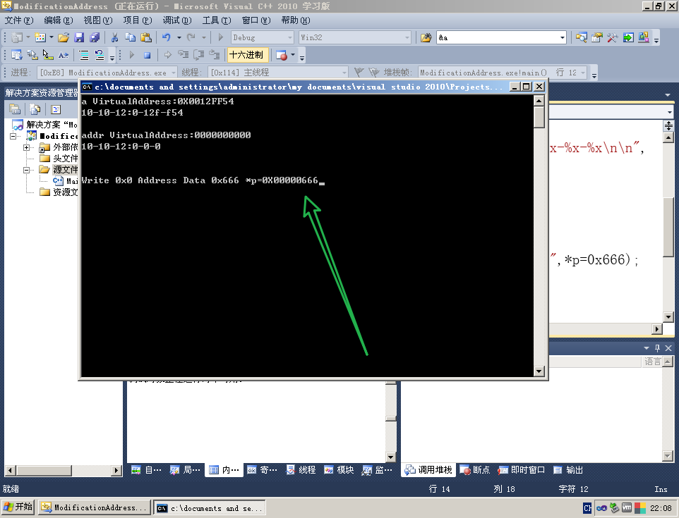

# 10-10-12 分页
一个物理页的大小为 4096 字节，即 2 的 12 次方，若要遍历整个物理页，则需要 12 个比特位
一个页表有 1024 个页表项，1024 等于 2 的十次方，即需要 10 个比特位
页目录表里有 1024 个页目录项，也需要 10 个比特位
# CR3
在所有的寄存器中，只有 Cr3 存储的是物理地址，其它寄存器存的都是线性地址
Cr3 所存储的物理地址指向了一个页目录表（PDT）
在 Windows 中，一个页的大小通常为 4KB，即一个页可以存储 1024 个页目录表项（PDE）
# PDE 与 PTE

- PDE（页目录表项）
描述：
页目录表（PDT）的每一项元素称为页目录表项（PDE）
每个页目录表项指向一个页表（PTT）
每个页表的大小为 4KB，即一个页表可以存储 1024 个页表项（PTE）
- PTE（页表项）
描述：
页表（PTT）的每一个元素称为页表项（PTE）
页表项（PTE）所指向的才是真正的物理页
特征：
- PTE 可以指向一个物理页，也可以不指向物理页
- 多个 PTE 可以指向同一个物理页
- 一个 PTE 只能指向一个物理页
# 物理页的属性
物理页的属性 = PDE 属性 & PTE 属性


P位 ：是否有效位
注意：当 PDE 或 PTE 中有一个的属性 P=0 时，物理页就是无效的
R/W位 ：读写位
R/W=0：只读
R/W=1：可读可写
U/S位 ：权限位
U/S=0：特权用户
U/S=1：普通用户
PS位 ：PDE 特有
PS == PageSize
PS=1：PDE 直接指向物理页，低 22 位 = 页内偏移，偏移最大值为 4MB，俗称 "大页"
PS=0：PDE 指向 PTE
A位 ：访问位
A=1：该 PDE/PTE 被访问过
A=0：该 PDE/PTE 未被访问过
D位 ：脏位
D=1：该 PDE/PTE 被写过
D=0：该 PDE/PTE 未被写过
关于 G 位，PWT 位，PCD 位，学完控制寄存器域 TLB 才能讲。
# 实验
# 修改 U/S 位访问高 2G 内存
之前学习段的时候，我们可以通过调用门，中断门，任务门等方式将 CPL 提升到 0，从而可以读写高 2G 内存。学习了 U/S 位后，我们可以不提权也能访问高 2G，只需要将想访问的物理页对应的 PDE PTE 的 U/S 位改写为 1 即可。
#include<stdio.h> | |
int main(){ | |
unsigned int* p = (unsigned int*)0x8003f020; | |
unsigned int addr = (unsigned int)p; | |
printf("addr Linear Address:%#010X\n10-10-12: %x-%x-%x\n",addr,addr>>22,(addr>>12)&0x3FF,addr&0xFFF); | |
getchar(); | |
printf("Read High 2G Memory %#010X:%#010X\n",addr,*p); | |
getchar(); | |
return 0; | |
} |
查看 PDE 和 PTE

修改 U/S 位并查看是否修改成功

成功读取高 2G 内存的值

# PS 位验证
随便找一个进程的 CR3，看一下

CR3: 143d3000
10-10-12:50-3d3-0
# 通过修改页表使代码能在 0 地址处读写
#include<stdio.h> | |
int main(){ | |
unsigned int* p = 0x0; | |
unsigned int a = 0x12345678; | |
unsigned int addr = (unsigned int)p; | |
printf("a VirtualAddress:%#010X\n10-10-12:%x-%x-%x\n\n", | |
(unsigned int)&a, | |
(unsigned int)&a>>22, | |
((unsigned int)&a>>12&0x3FF), | |
(unsigned int)&a&0xFFF); | |
printf("addr VirtualAddress:%#010X\n10-10-12:%x-%x-%x\n\n", | |
addr, | |
addr>>22, | |
(addr>>12&0x3FF), | |
addr&0xFFF); | |
getchar(); | |
printf("Write 0x0 Address Data 0x666 *p=%#010X",*p=0x666); | |
getchar(); | |
return 0; | |
} |
查看程序的 CR3，找到 a 变量的物理地址。

更改 0 地址的 PTE，使 0 地址的 PDE 指向变量 a 的 PTE。

结果：

# 通过修改物理页属性使字符串常量可修改
懒得做了，修改一下 R/w 位就行了
#include <stdio.h> | |
int main(int argc, char *argv[]) | |
{ | |
char *str = "Hello World";// 众所周知，C 语言中字符串是不能直接修改的。 | |
printf("线性地址：%x", str); | |
getchar(); // 让程序执行到这里 | |
// 修改只读变量 | |
str[0] = 'M'; | |
printf("修改后的值：%s\n",str); | |
getchar(); | |
return 0; | |
} |
# Reference
https://blog.csdn.net/Kwansy/article/details/108914393
https://blog.csdn.net/qq_41988448/article/details/102627239